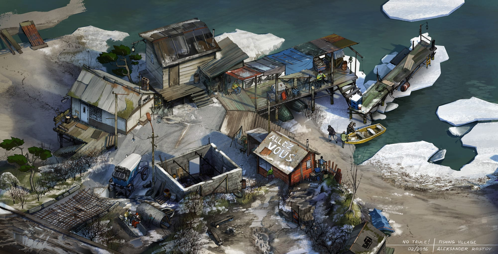
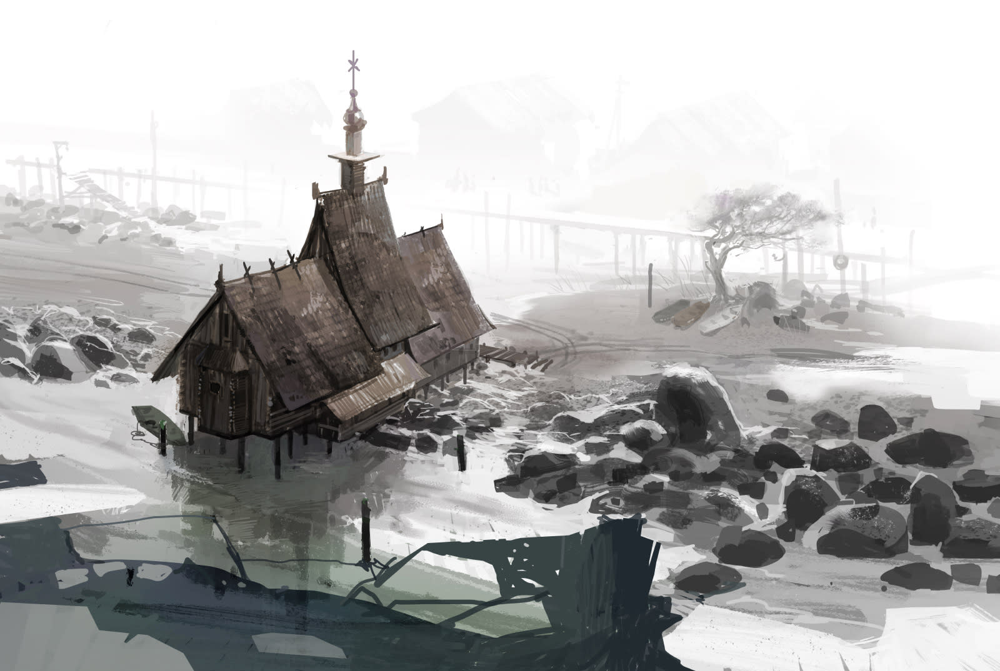
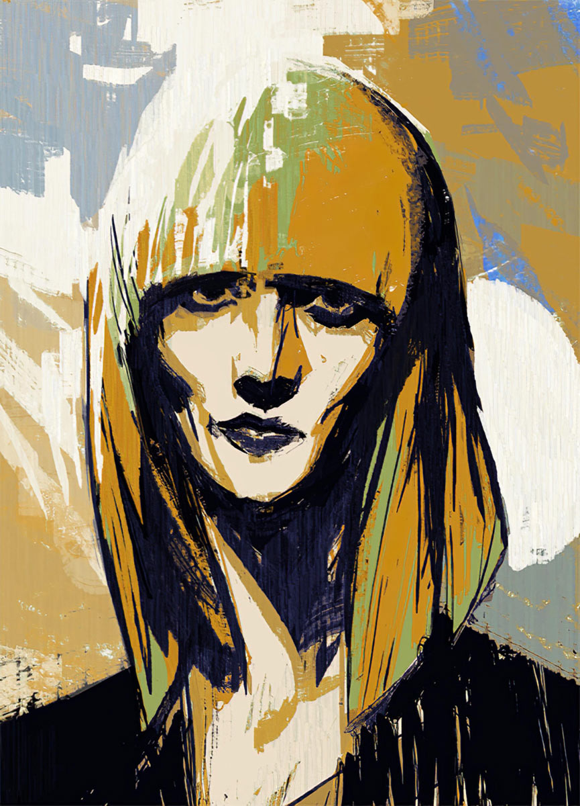

Artwork Gallery
Browse character portraits and locations from the game these are some of my favorite :) Select a page in the navigation to learn more about each subject.




 Harrier "Harry" Du Bois
Harrier "Harry" Du Bois
 Kim Kitsuragi
Kim Kitsuragi
 Joyce Messier
Joyce Messier
 Evrart Claire
Evrart Claire

Klaasje Cuno
Cuno